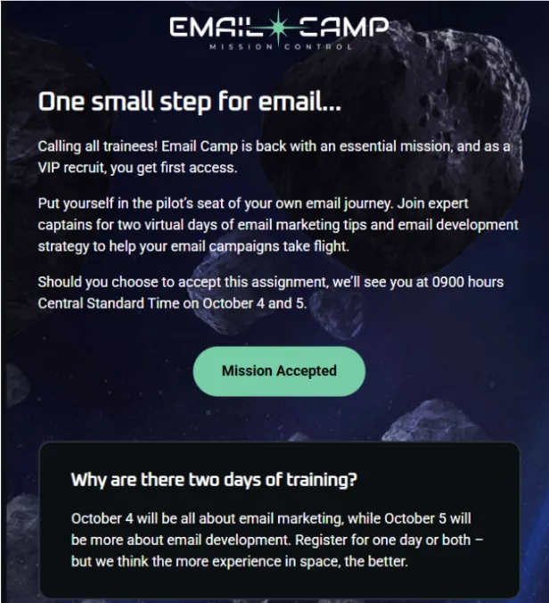
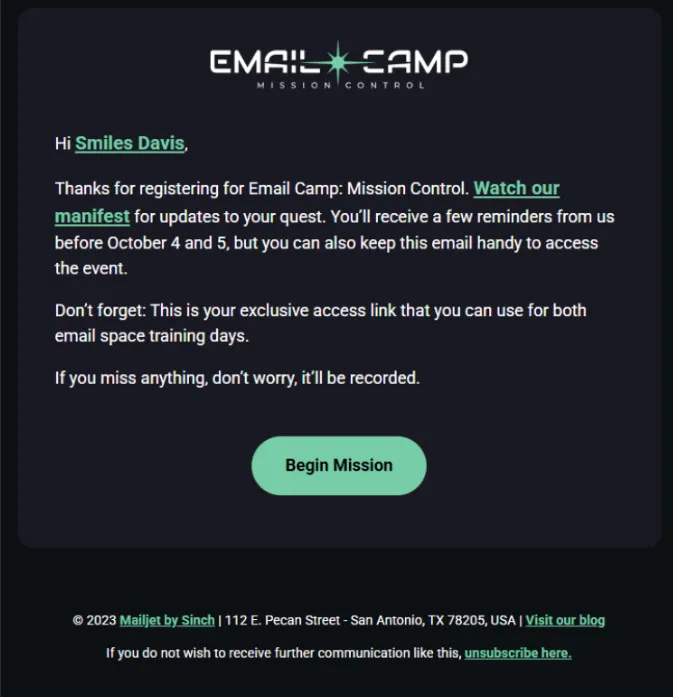
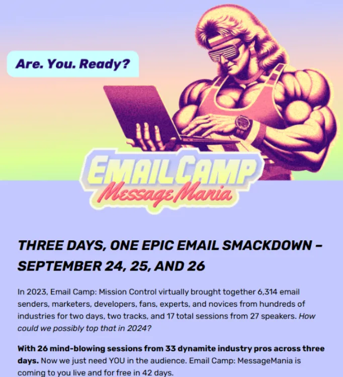
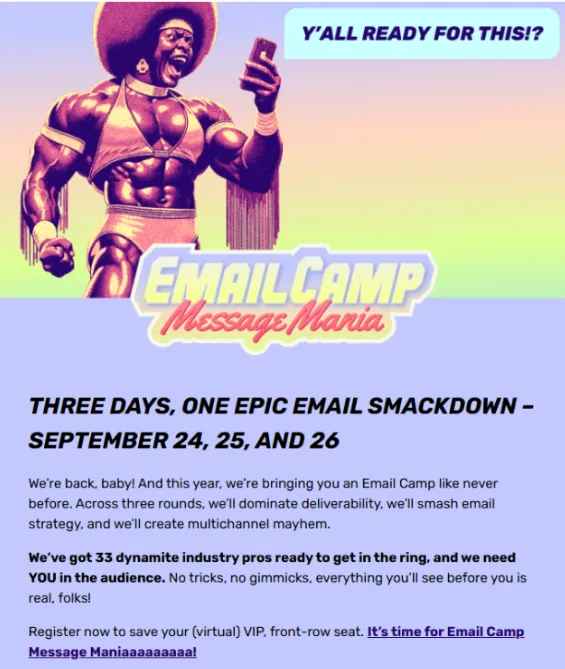

Promoting a virtual conference through email marketing requires more than just sending announcements—it necessitates clear messaging, an accessible design, and trust-building tactics that drive registrations.
For Email Camp, that meant using live text, mobile-friendly layouts, and product moments that feel alive in the inbox. Their team combined lifecycle strategy, segmentation, and design systems across announcement, confirmation, and VIP emails. In this episode of Feedback Friday, Matt Helbig chats with Mailgun’s Megan Boshuyzen to discuss the Email Camp rollout and confirmation flows. From contrast-aware headlines and hover effects to subtle motion and timing tactics, they share proven ways to enhance readability, build trust, and increase last-day conversions without relying on gimmicks like countdown GIFs.
If you work in ecommerce, product, or retention marketing, this episode is packed with email strategies to inform, reassure, and convert attendees.
TL;DR:
- Design accessible layouts with live text, strong contrast, and mobile responsiveness.
- Prioritize VIP segments by emailing last year’s registrants first to drive early signups.
- Send short, clear confirmation emails that reassure attendees and highlight recordings.
- Use consistent CTAs and messaging across headers, buttons, and email flows.
- Add subtle animation and hover effects to engage without distracting.
- Repurpose event content into blogs and YouTube for lasting SEO and reach.
Matt Helbig: What is up? Email geeks, welcome back to another episode of Feedback Friday. We've been away for a minute, but this week, we are joined by a fantastic guest: Megan from Mailgun. She's not only the senior developer at Mailgun, but she also hosts Email on Acid's "Notes from the Dev" and her own podcast, and is the writer of "It Depends," an email newsletter that I subscribe to, which focuses on email marketing.
This week, we're diving into some Email Camp messages that I'm really excited to examine. If you want to learn more about segmentation, personalization, clear calls to action, and including informational content in a fun and compelling way, this is the one for you. Let's dive right in. You're joining this week to look at some Email Camp emails, which are a highlight of my year every year. Could you do an introduction? You've got a lot going on. You’ve got a podcast, you’ve got a newsletter—plug some stuff.
Megan Boshuyzen: I do all the things. Oh my gosh. Okay. So I handle all of the lifecycle marketing emails for Mailgun, Mailjet, Email on Acid. I do all the emails for Email Camp. I also have my newsletter, It Depends, which I send out about once a month about email marketing, development, and other random things. And I have a slightly email-related, but mostly not email-related podcast with my email bestie, Karen Slater, called Geek Out with Megan and Karen. And it's just how it sounds: we geek out about anime, cartoons, movies, books, all sorts of things. That’s all the things I do professionally.
Matt Helbig: Also, Notes from the Dev, right?
Megan Boshuyzen: That's been on a little bit of a hiatus, which is why I forgot to mention it. Yeah. There have been numerous interviews in past episodes that are pretty awesome, offering some amazing tips and tricks on how to do cool things in email.
Matt Helbig: Awesome. Great. Well, the first email we received from Email Camp was actually from last year, 2023, and the theme this year was Mission Control—got that space theme. Would you like to review some of the key points in this email and discuss what you liked about it?
(See the full email)
Megan Boshuyzen: Yeah, so the Mission Control space theme was really fun. Our big announcement email—if you got it in your inbox, you probably saw the big Star Wars reproduction intro, which is one of my prides and joys of coding, which was very fun.
However, going through this, we just have our simple introduction. This shows the information about the general conference. Our conference is completely free and virtual—we say that repeatedly. Will it be recorded? Yes, it will be recorded. It is always recorded. We say it's recorded so many times, and people still ask if it's going to be recorded. This is the first touchstone to inform people that it's coming up, to get it started, and to register.
Matt Helbig: Nice. Yeah, I definitely like this one. It stood out to me. I love the use of live text on these buttons, these different sections. Is there anything you would like to change?
Megan Boshuyzen: Yeah, I think the one thing that's always a struggle when doing live text over images is making sure everything's readable. Like, if we look at the “One Giant Leap for Email Geeks,” that “G,” the contrast over that rock is not very good. Sometimes, when you're aiming for a visually striking design, you need to make concessions, especially with a responsive email. We can see that in the mobile view, you can read it much better than in the desktop view. That’s something I always remain really conscious of and try to avoid—poor contrast situations.
Matt Helbig: Yeah, I love this one. I think it's pretty straightforward. I did have a couple of notes. I always love to see some hover effects on CTAs whenever possible—even some opacity—just to give a heads up that something’s clickable. I know it's only a desktop feature, but that's always a plus for me. One other thing I noticed across other event and webinar emails is that they include people's faces, the topics they're discussing, or company logos. I'd be curious to test this to see if you get higher signups by including more details of who’s going to be speaking.
Megan Boshuyzen: Yeah, if you look at the whole series of emails, when we send them out, we start really broad, and then as we get closer to the event, we add more details. Like right now, I’m working on the third email of the series for this year’s Email Camp, and that’s when we start getting into what the keynotes are. Or if you look at our 2022 Email Camp emails, we had one that was literally just a grid of all of our different speakers, with names and titles.
This one, being the first, and often, we’re still finalizing details when it goes out, is definitely more high-level. Then, we become increasingly detailed as the discussion progresses.
Matt Helbig: Very nice. Another trend we’re no longer seeing as much is the countdown GIF that counts down to the event. Do you see that going away, or is it something you might still use?
Megan Boshuyzen: Yeah. We've never really used a countdown GIF, mostly because that involves third parties, and our budget hasn’t really allowed us to incorporate things like that. One thing I would love to incorporate is personalized images, but I haven’t had the budget to invest in something like Nifty Images or Movable Ink to make that happen. Maybe one day. My one question about countdown timers that I haven't received a clear answer to is: How accurate can they be anymore with all the prefetching and MPP going on, where we can’t really determine when an email is accurately opened?
Matt Helbig: I agree. It's kind of a gray area. I feel like many brands have moved away from it because they’re unsure if it'll be supported. If there’s another way to create urgency that doesn’t involve a countdown timer, definitely try that. But I’m starting to see fewer of them—like you said, because they involve third parties, they add cost, and if you’re getting the same results without them, why bother?
Megan Boshuyzen: We usually send an email out a week beforehand and then again the day before. And I can say with certainty that the day-before email is one of our highest-converting ones, because we say, “It’s happening tomorrow.” Since it’s a free, virtual event, there are no logistics for someone to figure out far in advance. So, if they receive that last email the day before, they think, “Okay, I’ll register,” and they can do it right then and there. That email usually does really well.
Matt Helbig: I agree—the “last chance” one definitely converts.
Megan Boshuyzen: Yeah, so we definitely use the “Last Chance” send.
Matt Helbig: Befree is the best way to go from inspiration to creation. Befree offers HTML templates for all industries, occasions, and seasons, featuring eye-catching, customizable designs that are compatible across devices. Befree’s templates will help you create impressive emails easily so you can focus on what matters most—growing more cactus. It’s really one of the fastest and easiest ways to elevate your email game. Start your free trial today at befree.io.
(See the full email)
Well, this is a confirmation email. It looks like, hey, this is “I just registered,” and it says, you know, “Hi [First Name], thanks for registering.” There are some little teaser links here. Yeah, I really like this one. And again, you always say it’s going to be recorded. It's quite short, sweet, and to the point. Yep. Did you have any other thoughts on this one? What do you think worked well?
Megan Boshuyzen: I love the simplicity of this one. This year's one is even shorter, and I ended up adding a header image to it because it fit the theme so well, and the logo looked very empty without an image. So I made that change this year. But other than that, I don’t think I’d make any changes to the confirmation email. The one thing I wanted to do with this confirmation email, as I mentioned earlier, was to provide a personalized digital badge for the person who registered. Hopefully, one day I’ll be able to do that. I wanted it as an opportunity for somebody to take that image and share it on social media for further promotion and get some social sharing going. But again, budget and whatnot—we haven’t been able to pull that off yet. Perhaps you could do it in live text, in a layout, or something similar, but again, that means relying on a third-party service. It could be tricky.
Matt Helbig: Yeah. I’ve thought about doing it via live text, but it was the data needed and how the different systems were working. We were setting up new event software, and it just wasn’t ready in time. That’s definitely something I thought about, but it was just timing and the amount of work for everything else. It was one of the things we had to let go.
Megan Boshuyzen: The only other note I had, which I’ve seen other people do as well, is that in previous Email Camps, you’ve always had a host. I thought it would be kind of cool to maybe incorporate that person into the confirmation email. Something in letter format, like “Looking forward to seeing you, I’m excited.” That could create some extra connection. I was curious too—before we move on, do you do any remarketing to these people after you send out the recordings? Is there a follow-up email, or do you simply keep them in the database and then send the VIP email for the next event?
Matt Helbig: We have done some email nurturing after the event, sending them information. Many of the sessions are also turned into articles on our websites, where we summarize the key points in a blog post and link to the recording, as they are all hosted on YouTube. We do a lot with the content so that people can access it in various ways.
(See the full email)
Alright, now we’re here for the main event—Email Camp, Message Mania, the exciting conference that’s coming. I’m obsessed with this theme, and I definitely want to plug our Really Good Emails. Mike Nelson will be giving a talk about design trends, so I’m excited to attend that. However, I’m even more excited about this event. The lineup is stacked. Definitely go visit this one.
Megan Boshuyzen: Oh my gosh. I’m just so in love with these graphics. They were done by our designer, Kim Kirby. Every year she works on Email Camp, and every year she hits it out of the park. I don’t know how she’s going to outdo herself the next year, and then somehow it’s even better. It’s amazing. There’s nothing here I would change. I love this email design, and it takes a lot for me to say that I love something I’ve created. For this particular email, I think it’s well-structured, easy to read and scan, and we have several CTAs. Hopefully, a lot of people will click on it and register.
Matt Helbig: Nice. Yes, I meant to mention that in the other email as well. I really like the CTA copy. It’s not just an RSVP—you’re trying some different copy text here that I really like. And again, everything’s live text, really accessible, and it looks great on both desktop and mobile. So yeah, I really appreciate that.
Megan Boshuyzen: Yeah. If you look at the header image, you'll see the phrase “Are you ready?” which is a reference to a wrestling catchphrase. That first CTA, when I added it, wasn’t originally part of the design. I thought the email was too long to have only the CTA at the bottom, so I added a second one. I originally put in “Woo” because that’s a wrestling thing. Then Julia, a brilliant copywriter, suggested changing it to “I’m ready,” so it would respond to the header. That was brilliant because it provides consistency throughout the entire email. Designers and copywriters often overlook the experience throughout the entire email. Sometimes it gets disconnected. But here it all flows nicely.
Matt Helbig: I’m a big fan of this one. I also had some other notes. I think I messaged you about maybe adding some animation. Personally, I prefer a subtle element in the header to catch the attention. I was thinking “Are you ready?” could load in each word separately. To me, subtle animation works, and sometimes you don’t have to worry as much about fallbacks depending on the client or browser. I also love hearing about how you incorporated data from the previous event. It feels a little more personalized, not generic. Styling some of the text with bolding creates hierarchy. And my last question—an interesting design choice compared to the previous one—is the placement of the button. In this one, the button is locked into a block instead of being separate. I think it works, but I expected it to be lower down.
Megan Boshuyzen: It was originally on its own, and I didn’t like how it felt like it was floating underneath compared to the other cards. I experimented with adding an image and the structure, which I think works better visually. Sometimes there’s too much white space. As a former designer, I could feel it wasn’t right, and if it doesn’t feel right to me, it won’t feel right to others. I prefer having the main text on a purple background as the primary message, then breaking it down into separate days, and finally including a secondary CTA.
Matt Helbig: Nice. I also appreciate that this is left-aligned. Some people might be tempted to center the text, but for readability, I definitely prefer it this way.
Megan Boshuyzen: Yes. Email accessibility and live text are two of the things I prioritize most. You’ll see me using live text almost always, 99.9% of the time. Having “Are you ready?” in the image is less common for me, but it fits the image and the theme, so I was fine with it. I wrote very descriptive alt text for the image to cover accessibility. You have to know when to push and when to pull.
Matt Helbig: Exactly. How is this email different from the previous one?
(See the full email)
Megan Boshuyzen: This is our “VIP email.” It goes out only to people who registered for Email Camp the previous year. They get the first email because we know they’re engaged and will click and register. We’ve had really high click-through rates on this one. This goes out first, and then the other email we were looking at is sent a couple of weeks later to our entire audience across all our brands.
Matt Helbig: That’s smart. I’m curious—plain text versus designed email for VIPs. I wonder if they would perform the same, like more of an invitation.
Megan Boshuyzen: It would be interesting to A/B test something like this against a plain-text email from Thomas Krin, our MC each year, inviting people to register. I hadn’t thought about that, but it could be fun to try next year.
Matt Helbig: Well, this is a very impressive hover effect. One of the rare times I’ve seen this. What CSS value is this?
Megan Boshuyzen: It’s just a basic hover effect. It only has the nice transition on Apple devices. Gmail supports the hover effect, where text gets bigger, but it snaps to a larger size. I thought it was fun—like “Let’s get ready to rumble” right before a match starts.
Matt Helbig: Well, you’ll see me at this event. I’ll be in a full luchador mask or something like that.
Megan Boshuyzen: Yes. Love it.
Matt Helbig: Thanks so much for walking through these emails today. I really appreciate it.
Megan Boshuyzen: Yeah, I’m excited for this event. My pleasure. I would just say register. We’ve expanded it to a third day to include omnichannel, which will be really fun and interesting since Cinch, our company, is a leader in SMS messaging, RCS, and similar technologies. I believe we will have sessions on how to combine all of this. Definitely keep an eye out. It’s going to be really fun. Email Camp is a great time.
Matt Helbig: Thanks so much. Have a great rest of your week.